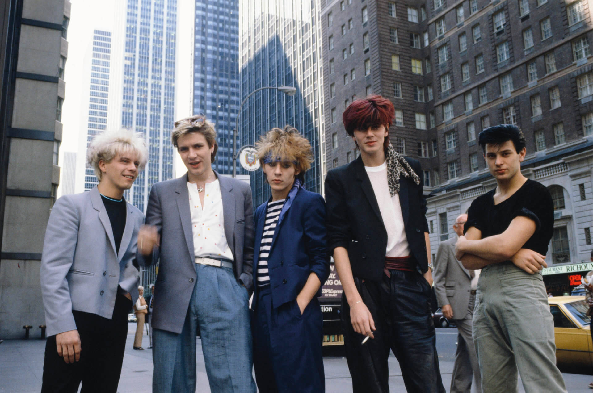
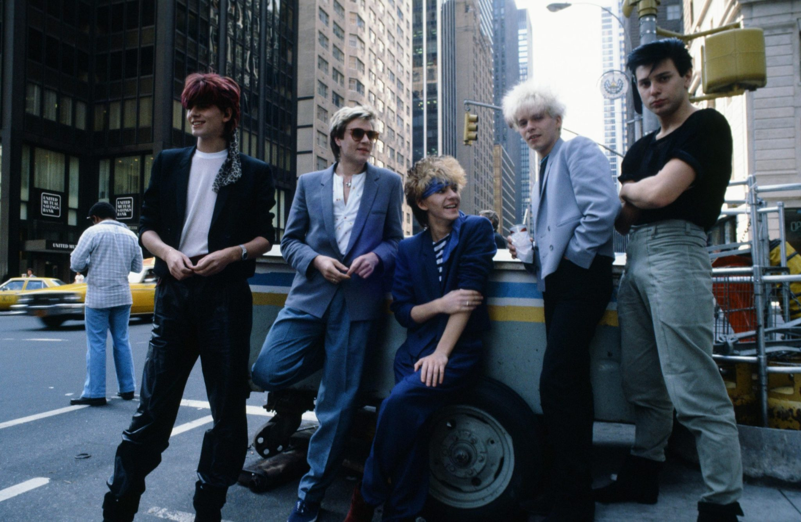
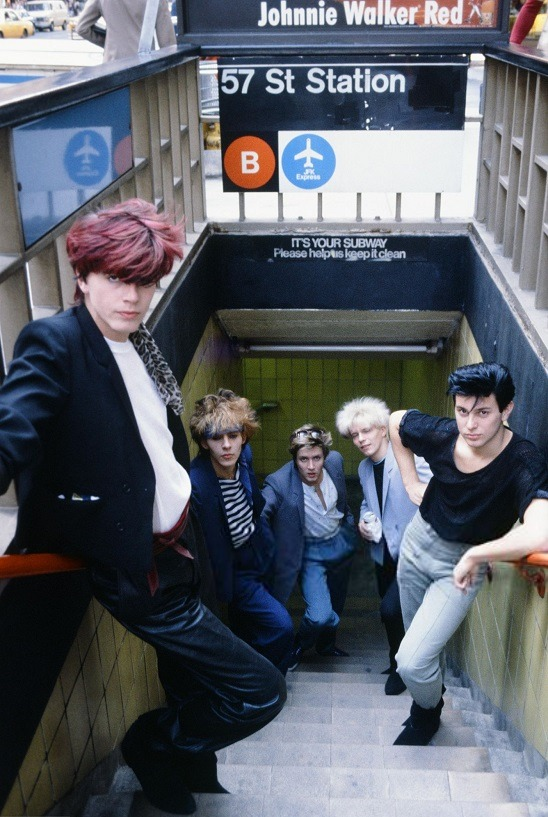

Rasta piece. Fuck yeah.
Also, check out the Chris 217 tag. That dude was everywhere. I met him once, and a (cute girl) friend of mine talked him into letting me into Acid Writers.
Rasta piece. Fuck yeah.
Also, check out the Chris 217 tag. That dude was everywhere. I met him once, and a (cute girl) friend of mine talked him into letting me into Acid Writers.

42nd Street and 10th Avenue, 1976. Groovy t-shirts. Groovier 10-speed.

Soho, 1970s

Available: Airy apartment with open floor plan. Picturesque views. Off street parking.

Coney Island irony.
Jacob Riis Plaza playground, lower east side

P.S. 166 playground, West 89th Street

Kings Highway and East 16th Street, Brooklyn, 1985

Early graffiti on the subway
Harlem, 1967

70s graffiti
6th Avenue looking north towards 8th Street, 1965

Jaywalking in 1975.

Canal Jean. Oh, the awesome $5 used clothes you could find there!
Where the hell was this when I was in NYC?

Central Park paddling, 1962
Thanksgiving parade, 1978

Times Square, 1965

Ah, Sbarro, home of vastly overpriced, mediocre pizza. Times Square, 1988.
What?

Mid-80s graffiti on the subway
Breakin’, 1984

Breakdancers on 5th Avenue, 1981

Run DMC and the Empire State Building, 1985

LL Cool J livin’ large, 1987

Standing on the third rail like it’s nothing. 1981.

Eric B and Rakim crossing 14th St, 1989

Run DMC in Central Park, 1980s
72nd Street
Trying to fix the South Bronx, 1980

Lincoln Center, 1986


Times Square, 1986
Cliff
Outside I.S. 44 in 1968
Rainy day in 1971, Times Square

B Train playing hide and seek in Brooklyn
This guy will fuck you up. Times Square, 1971
Studio 54, cocaine central, 1970s
1970s subway



Duran Duran photographed by David Tan in New York City, 1981.

Cabs, 1970s

8/8/1979 NY Times ad taken out by the Yankees, after their catcher Thurman Munson died in a plane crash
Skyline, 1982
Happy Odd Couple Day


Keith Haring photographed by Andy Warhol in New York City, 1985.

Great shot. (Pun not intended.)

I’m no bible scholar, but I’m pretty sure Jesus never said anything about the senator’s daughter.

Love this piece.

Subway life 1977